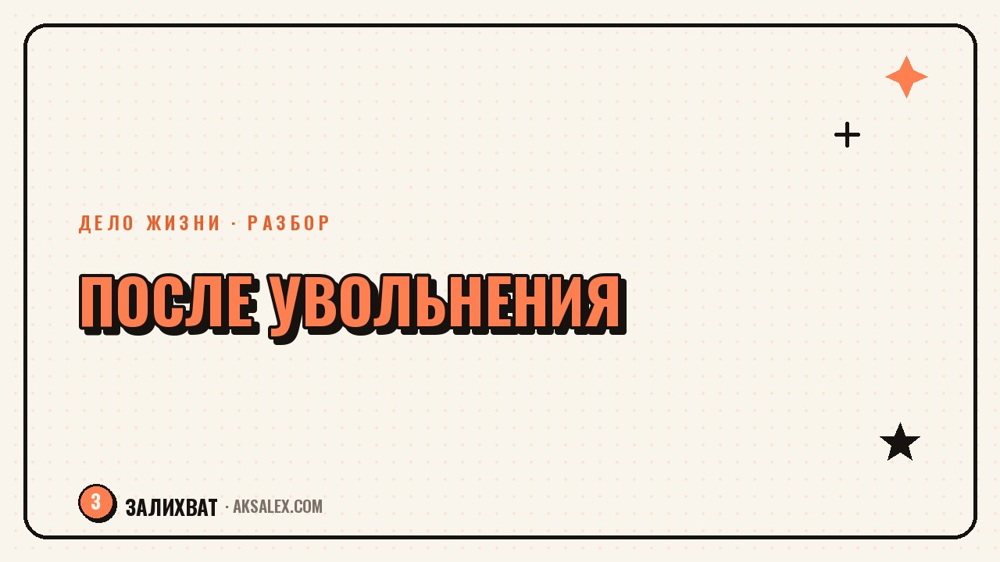

Как найти своё дело после увольнения

Увольнение редко выбирают сами, и первые дни после него - это не время для великих планов. Если сейчас тяжело, злость или пустота - это нормально, а не повод винить себя за несобранность. Но когда первая волна схлынет, появляется редкая возможность: не бросаться в такую же работу по инерции, а честно спросить себя, чего хочешь дальше. Разберём, как сделать это без спешки и без лишнего риска для кошелька.
Первые дни: дать себе право не знать ответ сразу
После увольнения хочется либо немедленно разослать резюме, либо наоборот - залечь и ничего не решать. Оба варианта - нормальная реакция на стресс, а не ошибка характера. Но решения о своём деле, принятые в панике первых дней, обычно ведут туда же, откуда ты только что ушёл.
Дай себе короткий срок - неделю или две, в зависимости от того, сколько позволяют финансы - на то, чтобы прожить случившееся, не принимая крупных решений. Это не лень и не прокрастинация, это время, нужное голове, чтобы перестать работать в режиме тревоги.
Что точно не стоит делать в первую неделю
- Соглашаться на первое же предложение из страха остаться без дохода
- Вкладывать накопления в идею, которую не обдумывал раньше этой недели
- Сравнивать себя с теми, кто «уже всё нашёл» - у них была своя дорога, у тебя своя
Почему это шанс, а не только повод искать такую же работу
Пока есть постоянная работа, редко остаётся время честно спросить себя, нравится ли вообще это направление, или ты в нём по инерции много лет. Увольнение убирает привычный график и вынуждает заново решать, куда идти - неприятно, но это редкая возможность выбрать осознанно, а не по накатанной.
Речь не о том, что нужно непременно открывать своё дело. Иногда честный ответ - вернуться в найм, но в другую сферу или на другую должность. Важно, чтобы это был выбор, а не паническое повторение прошлого.
Как понять, в какую сторону смотреть
Вместо абстрактного «найти себя» полезнее несколько конкретных вопросов. Выдели вечер и честно ответь на них письменно - устно эти мысли обычно теряются на третьей фразе.
- Что из прошлой работы было по-настоящему интересно, а не только привычно
- Какие задачи ты делал бесплатно или сверх нормы, потому что они увлекали
- О чём тебя чаще всего спрашивают друзья и знакомые - это часто подсказка о сильной стороне
- Что ты готов делать даже первые полгода без большого дохода, а что нет
Дело жизни редко приходит как вспышка - чаще это пересечение того, что умеешь, того, что не надоедает делать годами, и того, за что реально готовы платить.
Проверка идеи, прежде чем вкладывать время и деньги
Любая идея после увольнения кажется либо гениальной, либо нелепой - в режиме стресса крайностей больше, чем правды. Прежде чем вкладываться, стоит проверить идею по нескольким признакам.
| Что проверяешь | Как проверить без вложений | Плохой знак |
|---|---|---|
| Есть ли спрос | Спроси у 5-10 человек из целевой аудитории, купили бы они это | Все хвалят идею, но никто не называет цену, которую готов заплатить |
| Хватит ли сил на старте | Попробуй сделать часть работы бесплатно для 1-2 человек | Уже на пробном этапе чувствуешь сильное отторжение к процессу |
| Готов ли рынок | Посмотри, есть ли похожие предложения и как они продаются | Похожих предложений нет вообще - это не всегда свобода, иногда это отсутствие спроса |
Если идея проходит такую проверку хотя бы наполовину, с ней стоит работать дальше. Если нет - это не провал, а сэкономленные месяцы на идее, которая не взлетела бы.
Как не слить накопления и время впустую
Финансовая подушка после увольнения тает быстрее, чем кажется, особенно если тратить её на развитие идеи, которая пока не проверена. Разумнее делить время между поиском подработки, которая закроет текущие расходы, и постепенной проверкой своей идеи небольшими шагами.
Не обязательно выбирать между «сидеть без дела и искать себя» и «бросаться в бизнес на все деньги». Промежуточный вариант - подработка на несколько месяцев плюс пара часов в день на проверку идеи - снимает финансовое давление и даёт честную картину, стоит ли идея того, чтобы вложиться в неё по-настоящему.
План на первый месяц после увольнения
- Неделя 1: дать себе прожить ситуацию, без крупных решений
- Неделя 2: честно ответить на вопросы про интересы и сильные стороны, письменно
- Неделя 3: выбрать 1-2 идеи и проверить спрос у реальных людей, без вложений
- Неделя 4: решить, двигаться дальше с идеей, искать работу в новой сфере или совмещать и то и другое
Этот план не обещает, что через месяц всё станет ясно - иногда проверка идеи затягивается, и это нормально. Но он даёт структуру, которая удерживает от двух крайностей: панического найма куда угодно и бесконечного раздумья без единого шага.
Частые вопросы
Сколько времени нормально искать новое дело после увольнения?
Это очень индивидуально и зависит от финансовой подушки и личных обстоятельств, универсального срока нет. Важнее не уложиться в заданные недели, а не принимать крупные решения под давлением паники первых дней.
Как понять, что идея своего дела подходит именно мне?
Хороший признак - идея держится на пересечении того, что умеешь, что не надоедает делать долго, и за что готовы платить другие. Если хотя бы один из этих пунктов явно отсутствует, идею стоит пересмотреть или проверить осторожнее.
Стоит ли сразу увольняться в никуда, чтобы искать себя?
Если увольнение уже случилось, вопрос снимается сам. Если выбор ещё впереди, разумнее совмещать поиск нового направления с текущим доходом или подработкой, а не создавать финансовое давление искусственно.
Что делать, если после месяца поисков так и не появилось ясности?
Это не повод винить себя - для многих процесс занимает больше месяца, особенно если решение принималось в стрессе. Стоит пересмотреть план маленькими шагами: проверить ещё одну-две идеи и временно закрыть финансовый вопрос подработкой.
Можно ли совмещать поиск себя с подработкой в найме?
Да, и это часто разумнее, чем вкладывать все силы в одну непроверенную идею. Подработка снимает финансовое давление, а свободные часы можно честно потратить на проверку того, что откликается по-настоящему.
Раз тема оказалась полезной, вот что почитать следующим. Собираем чат-бота для блога с нейросетью без кода: что он умеет и с чего начать.
Читать статью →а не вручную